地政学
シーラーズは古代ペルシアの中心地ファールス州の州都で、ペルセポリス、ペルシア湾岸、ザグロス山地を結びます。首都ではありませんが、国家の歴史記憶、観光外交、南部資源経済の入口として政治的重みを持つ都市です。
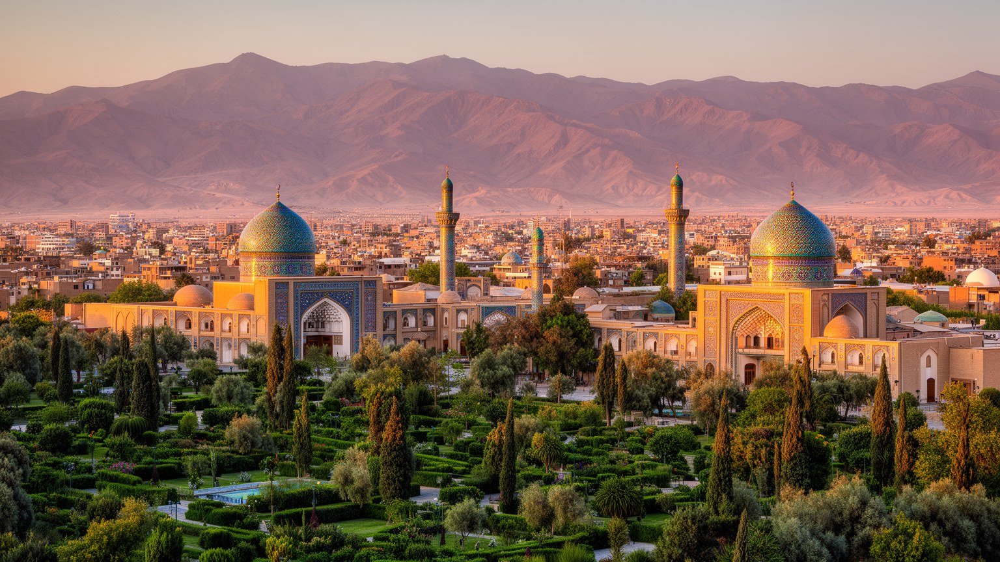
🇮🇷 イラン / ファールス州 / World City Atlas
ザグロス山脈の高原に広がるイラン南部の文化都市です。庭園、詩、聖廟、バザール、大学、医療、古代ペルシア遺跡への玄関口が、乾いた土地の水と暮らしの上に重なります。
都市の骨格
シーラーズは、ペルシア語詩の記憶と庭園のイメージで知られますが、実際には州都として大学、病院、行政、物流、工業、観光を束ねる生活都市です。水路、丘陵、バザール、郊外住宅を同じ地図で読む必要があります。
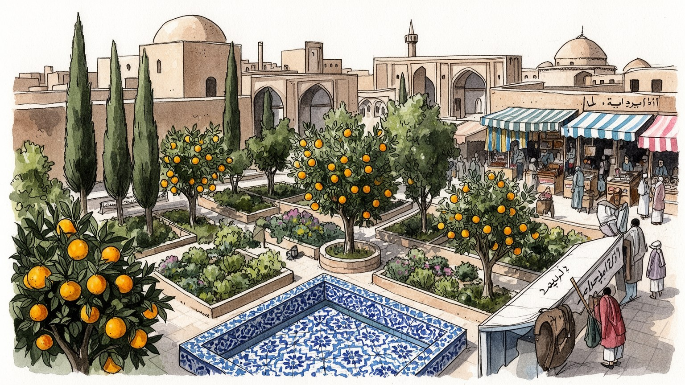
シーラーズは古代ペルシアの中心地ファールス州の州都で、ペルセポリス、ペルシア湾岸、ザグロス山地を結びます。首都ではありませんが、国家の歴史記憶、観光外交、南部資源経済の入口として政治的重みを持つ都市です。
観光、大学病院、農産加工、電子、石油化学、行政、建設、交通が雇用を支えます。若者や女性は教育を足場に職を探し、制裁、物価、移住願望の中で、家族経営の商いと専門職が併存する街として日々動いています。
ハーフェズとサアディーの詩、シャー・チェラーグ聖廟、庭園、バザール、家族の墓参が街の文化を形づくります。ペルシア語の美意識とシーア派の礼拝が近く、世俗的な散策と祈りが同じ都市時間に重なる都市でもあります。
観光客は庭園、詩人廟、聖廟、バザール、近郊遺跡を巡りますが、住民には水不足、家賃、交通、暑さ、医療、就職、教育が日常の条件になります。美しい都市像の背後で、乾燥地の生活管理が強く問われる都市です。
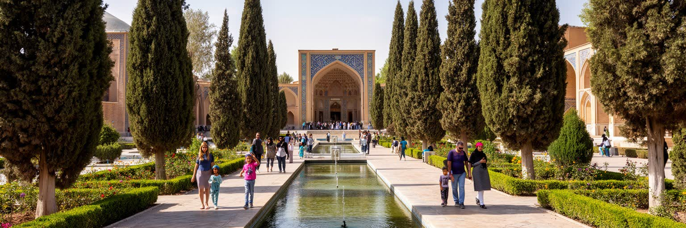
シーラーズの庭園は、花と糸杉が並ぶ美しい休憩場所であるだけでなく、乾燥地で水をどう分け、日陰をどう作り、権威や教養をどう表すかを示す都市装置です。エラム庭園に象徴されるペルシア庭園の形式は、直線的な水路、軸線、樹木、建物、眺望を組み合わせ、暑さの中に秩序と涼しさを作ります。夕方には子どもが水路のそばを走り、年配者がベンチでニュースを語り、若者は写真や散歩で涼を取ります。観光客は花の景観を楽しみますが、住民にとって庭園は家族の写真、休日の会話、学生の休息、結婚の記憶、軽い運動にも結びつきます。日陰では祖父母が孫を見守り、売店の冷たい飲み物が小さな社交を生みます。近くの学校行事や卒業写真にも使われ、庭は世代をつなぐ背景として街に根づきます。水が豊かに見える空間ほど、その背後には地下水、季節降水、灌漑、維持費、清掃、植栽管理があります。都市が拡大し、水不足が深まるほど、庭園を保つことは贅沢ではなく、暑い街で公共の涼しさを誰に配るかという問題になります。観光の写真では水面が静かに見えても、実際の管理は剪定、ポンプ、排水、入場者の動線まで含む細かな仕事で成り立ちます。バラの匂い、濡れた石の冷たさ、遠くの車音を意識すると、庭園は都市の贅沢ではなく、暑さの中で共有される生活インフラとして見えてきます。
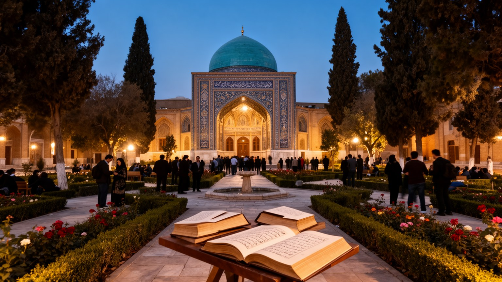
シーラーズを世界的に特別な都市にしているのは、ハーフェズとサアディーの記憶が、文学史の棚ではなく都市の公共空間に置かれていることです。詩人廟では、観光客、学生、家族連れ、恋人、年配者が同じ庭に集まり、詩句を声に出し、墓前で静かに立ち止まり、写真を撮ります。ペルシア語の詩は国家文化の象徴であると同時に、日常の会話、祝祭、恋愛、哀悼、道徳的な助言にも入り込んでいます。廟の周囲には書籍、音楽、茶、土産、案内人の仕事が生まれ、文化は雇用にもつながります。夕暮れの庭では、暗唱を聞かせる人、スマートフォンで朗読動画を共有する学生、古いラジオ番組の記憶を話す世代がすれ違います。地元メディアや学校行事も、記念日に朗読や音楽を取り上げ、夜の庭に静かな声を残します。家庭や学校で覚えた詩は、受験、恋愛、移住の迷い、親族の弔いを言葉にする手段にもなります。一方で、文化の聖地化は作家を固定した記念碑に変え、現在の表現や社会批評を見えにくくすることもあります。シーラーズの詩的な力は、古典を崇拝するだけでなく、今の人々が生活の中で読み替え続ける点にあります。廟を歩くと、文学が教科書から抜け出し、都市の時間を柔らかく整えていることが分かります。詩人廟は記念碑であると同時に、都市が自分の不安や希望を読む場所でもあります。
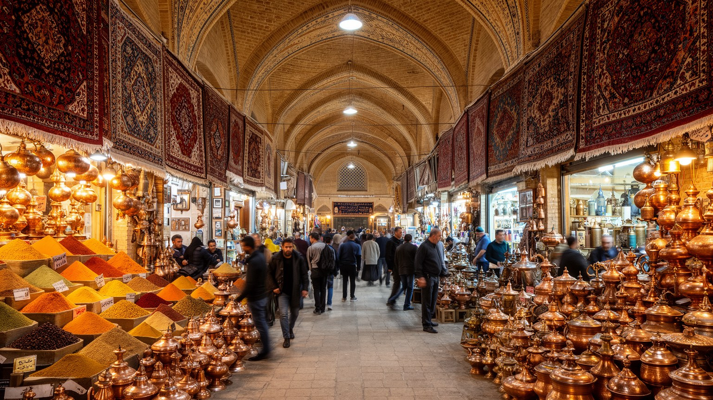
ヴァキール・バザールに代表されるシーラーズの市場は、観光客が歩く歴史的通路であると同時に、布、香辛料、銅器、絨毯、日用品、菓子、乾果、衣料、修理、配送が集まる実務的な商業空間です。ファールス州の農産物や周辺都市から来る商品は、ここで家庭の台所、結婚準備、贈り物、観光土産へ変わります。南へ行けばペルシア湾岸、北へ行けばエスファハーンやテヘランへつながる位置は、内陸の文化都市でありながら広い商圏を持つ理由になってきました。市場の店は古い天井の下にあっても、電話注文、配送、為替、制裁下の輸入品不足、電子決済、観光需要に敏感に反応します。商人、荷運び、職人、修理業者、食堂、露店、清掃、警備、案内人が一つの空間を分け合い、価格交渉や信用取引が人間関係を作ります。香辛料の匂い、銅を叩く音、揚げ菓子の甘さ、店先で交わされる近所の噂は、紙の統計では見えない情報網でもあります。買い物袋が揺れます。観光化が進むと商品は見栄えよく整えられますが、住民が日用品を買える市場であり続けることが都市には欠かせません。棚の品ぞろえを見れば、シーラーズが詩と庭園だけでなく、南部イランの生活経済を束ねる州都でもあることが分かります。昼の暑さ、礼拝時間、休暇で店の開閉が揺れる小さなリズムに、商業都市としての現実が表れます。
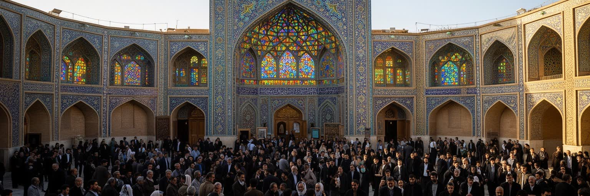
シャー・チェラーグ聖廟は、シーラーズの宗教的中心であり、都市の公共生活を理解する上で避けて通れない場所です。鏡細工の内部や広場の輝きは観光客にも強い印象を与えますが、ここは写真の対象である前に、祈願、弔い、寄進、家族の同行、静かな涙、礼拝の作法が集まる聖域です。シーア派の信仰は、国家制度や宗教行事だけでなく、家庭の時間、服装、食事、墓参、慈善、近所づきあいにも入り込みます。ラマダンやムハッラムの時期には、食事の時間、親族訪問、施し、学校や商店の動きが変わり、子どもも年配者も都市の宗教暦を身体で覚えます。夕方には香の匂いと祈りの声が広場へ流れ、家族は待ち合わせます。聖廟周辺では、清掃、警備、案内、売店、交通、飲食、宿泊の仕事が生まれ、祈りの空間は都市経済とも結びつきます。若者や女性、観光客、敬虔な家族が同じ公共空間を使うため、礼節、自由、商業、警備の境界は常に調整されます。聖廟を見ることは、信仰を建築の壮麗さとして眺めるだけではなく、人々が不安や希望を持ち寄る都市の受け皿を見ることでもあります。宗教行事の日には人の流れが変わり、周辺道路、食堂、宿、家族の予定も聖廟の時間に合わせて動きます。静けさと混雑、尊厳と観光、追悼と日常の移動が重なる場所に、シーラーズの宗教都市としての現実があります。
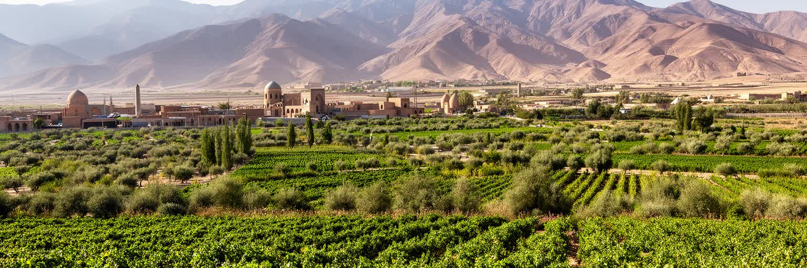
世界のワイン市場で知られる「シラーズ」という名は、しばしばこの都市への想像を呼び起こしますが、現在のイランではアルコール生産と消費は宗教法と国家制度によって厳しく制限されています。ワインの記憶を語る時には、観光的な物語だけでなく、宗教、法、農業、商業の変化を見なければなりません。ファールス州にはブドウ、柑橘、穀物、ナッツ、花、薬草などの農業があり、都市の食卓、菓子、乾果、ジュース、加工業を支えています。市場ではファールーデ、果物、ハーブ、サフラン、甘い菓子が季節の会話を作り、家庭料理や親族の集まりにも地域の農産物が入り込みます。古い酒造の記憶は詩や庭園の文化と結びついて語られますが、現在の生活では家族の農地、水不足、流通、食品価格、若者の農業離れがより切実な課題になります。名前だけが世界へ広がった都市は、外から期待されるイメージと、住民が実際に守る生活規範の間に置かれています。シーラーズを読むには、失われたワインを懐かしむだけでなく、乾燥地の農業がどのように都市の台所と雇用を支えているかを見る必要があります。市場に並ぶ干しブドウやジュースは、禁じられた酒の代替ではなく、現在の食文化そのものとして価値を持ちますし、街の記憶です。記憶と規範の距離を丁寧に見ることが、この都市の複雑さを理解する近道です。
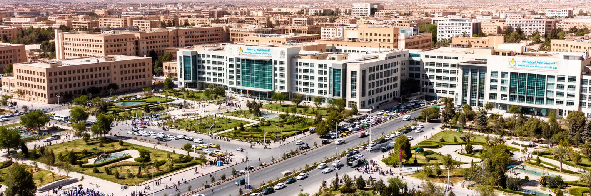
シーラーズは文化観光の都市であると同時に、南部イランの大学と医療の中心でもあります。シーラーズ大学、医科大学、専門病院、研究機関は、ファールス州だけでなく周辺地域から学生、患者、医師、研究者、看護師、技師を集めます。医学教育と病院は安定した雇用を生み、薬品、検査、宿泊、交通、飲食、介護、家族の滞在を含む広い経済を動かします。地方から来た患者にとって、シーラーズは治療の希望である一方、滞在費、言葉、待ち時間、家族の付き添いという負担も伴います。学生にとっては、専門職への入口であり、都市的な自由、就職不安、国外留学への願望が交差する場所です。小中高校、塾、語学学校、受験準備の教室は、親が子どもの将来に投資する日常的な現場でもあります。大学周辺の書店、下宿、食堂、カフェ、コピー店、スポーツ施設は、観光地とは違う若い都市文化を作ります。週末の試合も話題です。制裁や通貨安は研究機材、薬、国際交流、医療費に影響し、知の都市としての力を試します。病院の廊下、講義室、研究室、学生の通学路を見ると、都市が地域の命と将来を預かっていることが分かります。家族が患者に付き添って滞在する時、安い宿、食堂、薬局、タクシーも医療圏の一部になります。知とケアは施設の中だけで完結せず、都市全体の受け入れ能力として現れます。
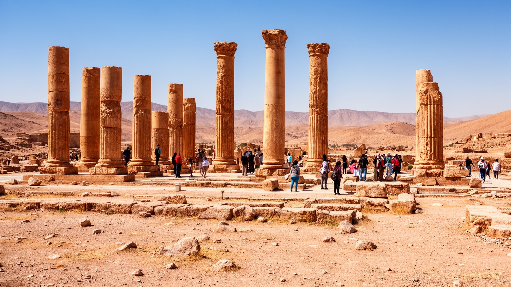
シーラーズは、ペルセポリス、ナクシェ・ロスタム、パサルガダエへ向かう玄関口であり、古代ペルシア帝国の記憶を現在の都市観光へつなぐ役割を担います。訪問者の多くは市内に泊まり、バザールや庭園を歩き、翌日に遺跡へ向かうため、ホテル、ガイド、車、飲食、土産、博物館、道路整備は一つの観光圏として動きます。遺跡は国家の誇りと世界遺産の価値を持ちますが、そこに向かう交通と説明の仕方は現代の政治的な意味も帯びります。イスラム後の詩と聖廟の都市であるシーラーズが、イスラム以前の帝国記憶への入口にもなることは、イランの歴史が一枚岩ではないことを示しています。観光ガイド、運転手、宿の主人、土産物店は、道路状況、休日の混雑、入場の注意を口コミや携帯電話で伝え、旅の情報網を形づくります。古代の柱や浮彫を見た後に市内の聖廟や詩人廟へ戻ると、王権、宗教、文学、観光が長い時間の中で重なっていることが分かります。一方で、遺跡観光は保存、暑さ、過剰な人出、地域住民の利益配分、道路開発の問題も抱えます。シーラーズが玄関口である以上、遺跡を遠い過去として切り離すのではなく、市内の雇用、教育、ホテル業、地域交通へどう還元するかが問われます。遺跡へ向かう朝の車列、日陰を探す見学者、売店で働く人々は、歴史が現在の労働と観光管理に結びつく瞬間を示します。過去への敬意は、周辺地域の暮らしを軽く扱わない態度によって保たれます。
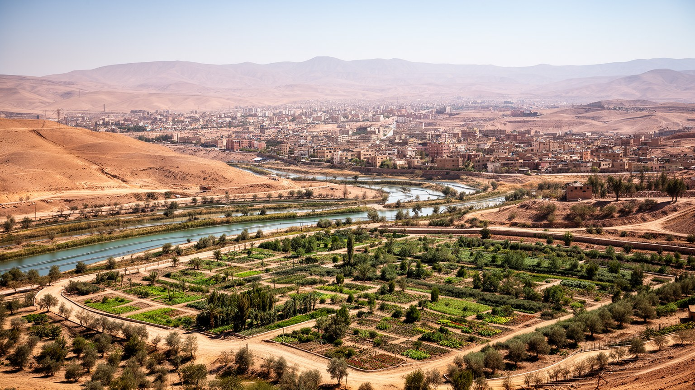
シーラーズの未来を左右する最大の条件の一つは水です。半乾燥の高原都市では、降水の変動、地下水の低下、農業用水、都市の飲料水、庭園の維持、ホテルや病院の需要が互いに競合します。美しい庭園や並木道は都市の魅力ですが、その緑を保つには水が必要で、郊外住宅や道路が広がるほど配水、下水、排水、洪水対策の負担も増えます。乾いた河道や季節的な雨は、普段は水不足を意識させ、豪雨時には排水能力を問います。水は環境負荷であると同時に、食品価格、家賃、健康、観光、公共空間、農家の収入へ直結する生活上の焦点です。夏の暑さが強まれば、日陰、街路樹、断熱、公共の休憩場所は単なる景観ではなく、子どもや高齢者を熱から守る設備になります。公園での散歩や軽い体操、夕方のサッカー、家族のピクニックも、水と日陰があって初めて成り立ちます。夕方の歓声も水に支えられます。シーラーズの庭園都市としての評判は、水を豊かに使うことで支えられてきましたが、これからは限られた水を公平に使いながら涼しさを保つ技術が問われます。漏水対策、節水型の植栽、再利用水、農業との調整、郊外開発の抑制は目立たないものの重要です。水圧が低い住宅、暑い日に外で働く人、農地を手放す家族は、気候リスクを統計ではなく身体で経験します。見えない配管こそ、庭園都市の未来を左右する基盤です。
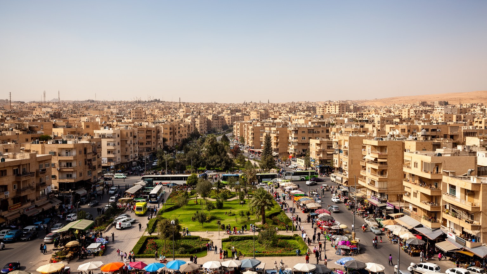
シーラーズの日常は、庭園や詩人廟の周辺だけでなく、集合住宅、郊外の新興地区、古い路地、学校、病院、市場、バス停、家族経営の店に広がっています。住民にとって重要なのは、どの観光地が近いかよりも、家賃、通勤、学校、医療、食材価格、夏の暑さ、親族との距離です。中心部の歴史的景観は都市の価値を高めますが、観光施設や道路整備が進むと、古い商店や低所得世帯が押し出されることもあります。郊外へ移る世帯は広い住まいを得る一方、公共交通や職場から遠くなり、車への依存が増えます。若者は大学で学んでも安定した仕事を見つけにくく、移住や国外進学を考える人もいます。女性は教育と専門職への道を広げながら、家族の期待や社会規範と向き合います。夜の娯楽は大音量の酒場よりも、カフェ、家族の外食、詩や音楽の集まり、サッカー中継、庭園散歩に寄ります。地域のニュースは親族、近所、店主、学校の保護者、メッセージアプリを通じて回り、仕事や部屋探しの情報にもなります。店先の小さな掲示も頼られます。電話も鳴ります。休日に庭園で写真を撮る家族、病院へ付き添う親族、朝の送迎、夕方の買い物、混雑した道路、学生の下宿探しは、観光地図には載りにくい都市の本体です。名所の近くに暮らす負担と誇りを同時に見ることで、シーラーズの日常は立体的になります。
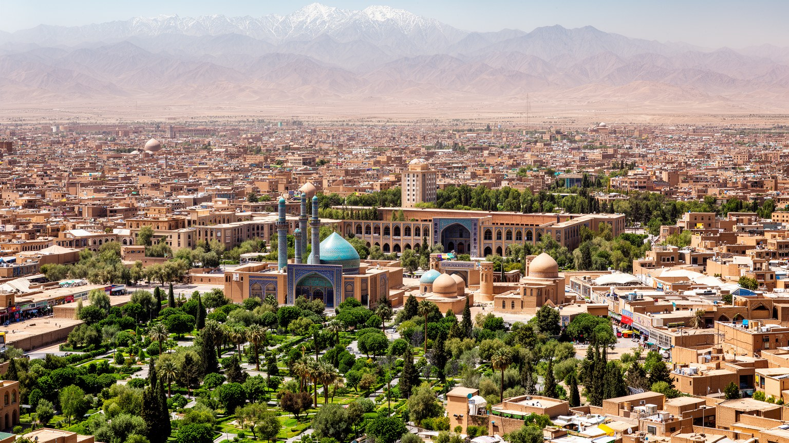
シーラーズを読む時、庭園と詩だけを前面に置くと、都市の本当の厚みを取り逃がします。この街は、古代ペルシアへの玄関口、ペルシア語文化の象徴、シーア派の聖域、ファールス州の行政と医療の中心、南部イランの商業拠点、乾燥地の生活都市という複数の顔を持ちます。エラム庭園や詩人廟は訪問者に強い印象を残しますが、それを支えるのは水路、清掃、庭師、案内人、学生、医師、商人、運転手、家族の生活です。ペルセポリスへ向かう道路、ヴァキール・バザールの商い、シャー・チェラーグの祈り、大学病院の待合室、郊外住宅の暑さは、同じ都市圏の中にあります。経済規模だけなら世界の巨大都市に及ばなくても、文化記憶を現在の暮らしへ結びつける力は大きいです。同時に、水不足、物価、雇用、保存と再開発、若者の将来不安は、都市の美しいイメージの下にある現実です。シーラーズの魅力は、過去を飾ることではなく、詩的な公共空間を持ちながら乾いた土地で暮らしを続ける調整力にあります。庭園の涼しさ、詩の言葉、聖廟の祈り、病院の仕事、市場の値段、学校帰りの子ども、年配者の散歩、サッカーの歓声、夜のカフェを一緒に見ると、シーラーズは記念碑ではなく、生きた都市として立ち上がります。訪れる人が名所を結ぶだけでなく、移動の途中にある住宅地、薬局、学校、乾いた河道、露店の声へ目を向けると、古都の現在が見えます。文化の深さと生活の制約を同時に読むことが、この都市への最も誠実な近づき方です。